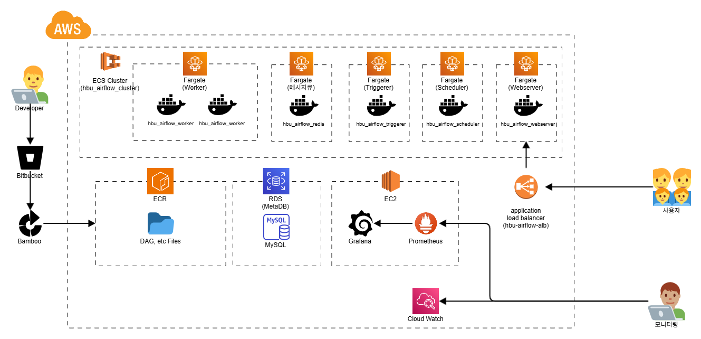
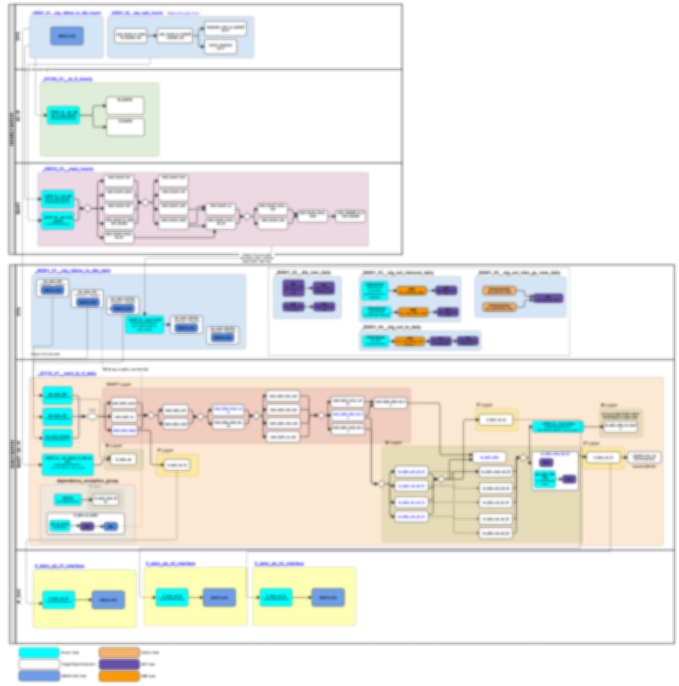

시스템의 비효율을 개선하여 운영 비용을 절감하고,
데이터의 신뢰성을 높이는 엔지니어링을 지향합니다.
주요 프로젝트에서 달성한 정량적 성과입니다.
각 카드를 클릭하면 해당 프로젝트 상세 내용으로 이동합니다.
배치 종료 시간을 5.5시간 앞당겨 비즈니스 의사결정 속도를 높였습니다.
리소스 효율 (비용 절감)
35% 절감
시스템 안정성
Grade S
에러 감소율
-80%
개발 생산성
300% 향상
비즈니스 요구사항을 기술적으로 해결한 주요 사례입니다.
2025.07 - 현재
배치 최적화 담당
단순 시간 기반 스케줄링으로 인한 리소스 대기 발생 및 메타 DB 부하로 전체 배치 지연 빈번.
ExternalTaskSensor 기반 Event-Driven 구조 전환, Deferrable Operator 적용, DB 클렌징 자동화.

Architecture Image
Batch Flow Image2023.09 - 2024.12
ETL 표준화 및 공통 모듈 개발
4개 기관의 데이터 형식 파편화 및 대용량 비정형 데이터(BLOB/CLOB) 전송 시 잦은 에러 발생.
ETL 공통 가이드 수립으로 개발 표준화. 메타데이터(수집여부 Y/N) 기반의 지능형 수집 프로그램 개발.
배치 스케줄러가 정해진 주기에 수집 Job 호출
메타 DB 조회: `수집여부=Y` 인 대상 필터링
(타 팀 웹페이지에서 관리됨)
- 신규 Y: 전체 데이터 수집
- 기존 Y: `마지막 수집일시` 기준 증분 수집
수집 데이터 정제(Cleansing) 후 PostgreSQL 적재
2021 - 2022
시각화(BI) 개발 및 Admin
OLAP Admin으로서 '정책지원시스템'의 200여 개 통계 화면 개발 및 관리를 담당. 화면별 개별 테이블 생성 방식으로 인한 개발 공수 과다 발생.
InnoQuartz(Talend기반)를 활용해 통계청 API 수집 프로그램을 호출하고, 수집 후 정제하여 '화면 ID' 키 기반 통합 테이블에 적재.
2021.07 - 2022.05
전사 정형 데이터 적재 표준화 및 Airflow 적용
수백 개의 이기종 테이블을 데이터 레이크로 통합해야 하는 초기 프로젝트. 무분별한 전체 적재(Full Load)로 인한 리소스 비효율 및 지연 발생이 우려됨.
테이블별 데이터 특성(Volume, Volatility)을 프로파일링하여 최적의 적재 전략(Full vs Incremental)을 수립하고, 표준화된 Airflow DAG를 구현하여 안정적 파이프라인 구축.
팀의 생산성과 안정성을 위해 표준화한 공통 모듈입니다.
def default_sensor(func):
"""
모든 컨트롤 DAG에서 공통으로 사용하는 유효성 체크용 데코레이터.
이전 배치의 성공 여부를 확인하여 데이터 정합성 보장.
"""
def wrapper(*args, **kwargs):
context = get_current_context()
schedule_type = args[0]
schedule_interval = args[1]
dag_run = context['dag_run']
# Manual 실행 시 테스트 편의를 위해 패스
if dag_run.run_type == 'manual':
return True
# Scheduled 실행 시 선행 DAG 상태 검증
elif dag_run.run_type == 'scheduled':
my_dag_id = context['dag'].dag_id
current_execution_date = context['execution_date']
# 스케줄 타입별 이전 실행 날짜 계산 로직
match schedule_type:
case ScheduleType.SCHEDULE_HOUR:
pre_execution_date = [current_execution_date - timedelta(hours=i*schedule_interval) for i in range(1,11)]
case ScheduleType.SCHEDULE_DAY:
pre_execution_date = current_execution_date - timedelta(days=schedule_interval)
# 이전 DagRun 상태 체크
my_pre_dagruns = DagRun.find(dag_id=my_dag_id, execution_date=pre_execution_date)
if my_pre_dagruns:
for run in my_pre_dagruns:
if run.state != State.SUCCESS:
return False # 선행 실패 시 현재 실행 중단
return func(args, kwargs)
return wrapper
def create_trigger_task(trigger_dag_id, task_id):
"""
TriggerDagRunOperator 생성 헬퍼 함수.
deferrable=True 설정을 기본값으로 하여 워커 리소스 점유 최소화.
"""
return TriggerDagRunOperator(
task_id=task_id,
trigger_dag_id=trigger_dag_id,
reset_dag_run=True,
wait_for_completion=True,
deferrable=True, # 핵심: Triggerer에서 대기하여 Worker 슬롯 절약
poke_interval=60,
logical_date="{{ execution_date }}",
conf={
# 시간 파라미터 자동 전파
'data_interval_start': "{{ task_instance.xcom_pull(key='data_interval_start') }}",
'data_interval_end': "{{ task_instance.xcom_pull(key='data_interval_end') }}"
}
)
def etl_processor(conn_id, **context):
"""
SQL 템플릿 렌더링, 실행, 로깅을 담당하는 표준 프로세서.
"""
from hbu.include.nbs_log_handler import RedshiftLogUtility
try:
# 1. Jinja Template 렌더링
env = ti.task.get_template_env()
dml_content = env.get_template(f"sql/{task_id}.sql").render(**context)
# 2. 로깅 시작
log_utility = RedshiftLogUtility(redshift_conn_id="hbu_lakehouse")
log_utility.insert_job_start_log(...)
# 3. SQL 실행
for stmt in statements:
dml_cursor.execute(stmt)
log_utility.insert_query_log(..., status="SUCCESS")
dml_conn.commit()
except Exception as e:
dml_conn.rollback()
raise AirflowFailException(f"ETL Failed: {e}")
finally:
if dml_conn: dml_conn.close()
def attach_svltask_to_dbt_tasks(dag, dbt_tg, svl_models):
"""
Redshift Serverless 기반 dbt 태스크 동적 생성 및 의존성 연결.
"""
target_name = "prd_serverless" if Variable.get("ENV") == "prd" else "dev_serverless"
with dbt_tg:
for model in svl_models:
# Serverless 실행 명령 생성
bash_cmd = _get_dbt_bash_command(
target_model=model["target_task"],
target_name=target_name
)
target_task = BashOperator(
task_id="run",
bash_command=bash_cmd
)
# 선행 모델 의존성 자동 연결
if model["pre_tasks"]:
pre_tasks = [find_task_in_group(dbt_tg, m) for m in model["pre_tasks"]]
pre_tasks >> target_task
import logging
from datetime import datetime
from typing import Any, Dict, Optional, Tuple, List
from airflow.providers.amazon.aws.hooks.redshift_sql import RedshiftSQLHook
class RedshiftLogUtility:
"""
Redshift에 ETL 로그를 기록하는 유틸리티 클래스입니다.
Job 상태 로그(Start/End)는 독립적인 커밋으로 영속성을 확보하며,
쿼리 상세 로그(Detail)는 성능을 위해 버퍼링 후 Bulk Insert 및 단일 커밋으로 처리합니다.
"""
DETAIL_LOG_COLUMNS = [
"DAG_ID", "RUN_ID", "TASK_ID", "TRY_NUMBER", "RUN_SQL_NUM",
"JOB_ID", "RUN_SQL_TOTAL_NUM", "RUN_SQL", "STATUS",
"AFFECTED_ROWS", "ERROR_MSG", "SQL_START", "SQL_END", "SQL_EXEC_TIME"
]
def __init__(self, redshift_conn_id: str):
# 1. Hook 인스턴스 초기화 (커넥션 재사용)
self.hook = RedshiftSQLHook(redshift_conn_id=redshift_conn_id)
# 2. 상세 로그(Detail Log)를 위한 버퍼 초기화
self.detail_buffer: List[Tuple] = []
logging.info("RedshiftLogUtility Initialized. Detail logs will be buffered.")
def _execute_single_sql(self, sql: str, params: Tuple[Any, ...]):
"""단일 쿼리를 실행하고 독립적으로 커밋합니다. (주로 Job Start/End 상태 기록용)"""
try:
self.hook.run(sql, parameters=params)
logging.debug(f"Redshift Log SQL Executed: {sql[:100]}...")
except Exception as e:
logging.error(f"Redshift Log Insertion Failed. Error: {e}")
pass
def insert_job_start_log(self, dag_id, run_id, task_id, try_number, to_kst_timestamp):
"""NBS_ETL_JOB_LOG 테이블에 Job 시작 로그를 기록합니다. (INSERT)"""
insert_sql = """
INSERT INTO admin.nbs_log (
DAG_ID, RUN_ID, TASK_ID, TRY_NUMBER, JOB_ID,
EXEC_TYPE, DATA_INTERVAL_START, DATA_INTERVAL_END, INTERVAL_TYPE,
STATUS, JOB_START
) VALUES (%s, %s, %s, %s, %s, %s, %s, %s, %s, 'RUNNING', GETDATE())
"""
params = (
dag_id, run_id, task_id, try_number,
to_kst_timestamp.get('job_id'),
to_kst_timestamp.get('exec_type', 'manual'),
to_kst_timestamp.get('data_interval_start'),
to_kst_timestamp.get('data_interval_end'),
to_kst_timestamp.get('interval_type')
)
self._execute_single_sql(insert_sql, params)
def update_job_end_log(self, dag_id, run_id, task_id, try_number, status, error_msg=None):
"""NBS_ETL_JOB_LOG 테이블의 Job 최종 상태를 업데이트합니다. (UPDATE)"""
if error_msg and len(error_msg) > 4000: error_msg = error_msg[:4000]
update_sql = """
UPDATE admin.nbs_log
SET STATUS = %s, JOB_END = GETDATE(),
JOB_EXEC_TIME = EXTRACT(EPOCH FROM (GETDATE() - JOB_START)),
ERROR_MSG = %s
WHERE DAG_ID = %s AND RUN_ID = %s AND TASK_ID = %s AND TRY_NUMBER = %s
"""
params = (status, error_msg, dag_id, run_id, task_id, try_number)
self._execute_single_sql(update_sql, params)
def insert_query_log(self, **kwargs):
"""쿼리 실행 상세 로그를 버퍼에 저장합니다."""
# ... (Parameter processing omitted for brevity)
params_tuple = (
kwargs['dag_id'], kwargs['run_id'], kwargs['task_id'], kwargs['try_number'],
kwargs['run_sql_num'], kwargs['job_id'], kwargs['run_sql_total_num'],
kwargs['sql_content'], kwargs['status'], kwargs['affected_rows'],
kwargs.get('error_msg'), kwargs['sql_start_time'], kwargs['sql_end_time'],
kwargs.get('exec_time')
)
self.detail_buffer.append(params_tuple)
def flush_detail_logs(self):
"""버퍼에 쌓인 모든 상세 로그를 Bulk Insert하고 단일 트랜잭션으로 커밋합니다."""
if not self.detail_buffer: return
logging.info(f"Flushing {len(self.detail_buffer)} detail log records...")
try:
# 🚨 hook.insert_rows()를 사용하여 Bulk Insert를 실행합니다.
self.hook.insert_rows(
table='admin.nbs_log_detail',
rows=self.detail_buffer,
target_fields=self.DETAIL_LOG_COLUMNS,
commit_every=0 # Bulk Commit
)
self.detail_buffer.clear()
except Exception as e:
logging.error(f"Redshift Bulk Log Insertion Failed. Error: {e}")
self.detail_buffer.clear()
# openapi_generator.py (주요 로직 요약)
import pandas as pd
import requests
from datetime import datetime
def get_df(json_url):
"""
통계청 API 호출 및 JSON 파싱을 통한 DataFrame 변환
User-Agent 무작위 설정을 통해 대량 호출 시 차단 방지 로직 적용
"""
user_agent = UserAgent()
headers = {'User-Agent': user_agent.random}
response = requests.get(json_url, headers=headers)
if response.status_code == 200:
json = response.json()
return pd.json_normalize(json)
else:
return False
if __name__ == "__main__":
# 1. 엑셀 파일(JSON_TO_CSV_LIST.xlsx)에서 수집 대상 지표 목록 로드
df = pd.read_excel('JSON_TO_CSV_LIST.xlsx', sheet_name='화면목록')
df = df[df['파일생성'] == 'O'] # '파일생성' 체크된 항목만 필터링
for file_name, tbl_id, tbl_cycle, tbl_sub_obj in zip(df['화면명'], df['tblId'], df['주기'], df['비고']):
try:
# 2. 미래 지표 여부 확인 및 수집 종료일(now_date) 동적 설정
# 2008년부터 현재까지의 데이터를 순차적으로 수집
# 3. Base URL 생성 (통계청/ECOS 등 분기 처리)
base_url = f'https://kosis.kr/openapi/Param/statisticsParameterData.do?method=getList...'
# 4. 4만 셀 이상 대용량 데이터 처리 (Pagination Logic)
if '대용량' in tbl_sub_obj:
# objL 레벨별로 반복 호출하여 병합 (recursive logic)
pass
# 5. 수집 결과 CSV 저장 (Encoding: utf-8-sig)
result.to_csv(f'output/{file_name}.csv', encoding='utf-8-sig', index=False)
print(f"Success: {file_name}")
except Exception as e:
print(f"Error: {file_name} - {e}")